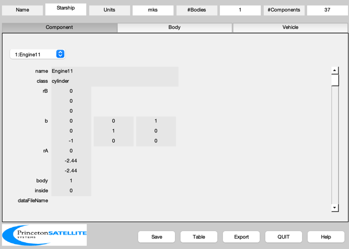
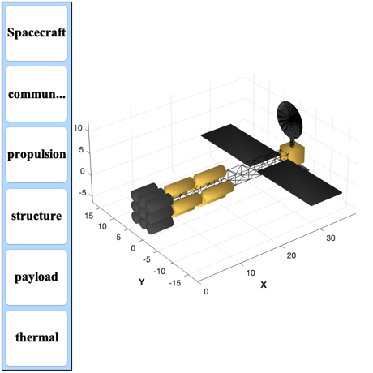

Design the starship
-------------------------------------------------------------------------
Contents
See also: BuildCADModel
%-------------------------------------------------------------------------- % Copyright (c) 2011 Princeton Satellite Systems, Inc. % All Rights Reserved. %-------------------------------------------------------------------------- massFuel = 34854.8; % kg densityD = 162.4; % kg/m^3 densityHe = 147.0; % kg/m^3 tempRad = 1000; % degK epsRad = 1; heat = 4.2e6*0.8; sig = 5.6697e-08; areaRad = 9*heat/(sig*epsRad*tempRad^4); wRad = 8; lRad = 0.25*areaRad/wRad; vD = 0.5*massFuel/densityD; vHe = 0.5*massFuel/densityHe; mE = 1.44e+04; rE = 2*0.61; lE = 8*0.61; mR = 1500; rT = rE; lD = vD/4/(pi*rT^2); lHe = vHe/4/(pi*rT^2); mGimbal = 7.5; lTruss = 2*(lE + lD + lHe); rTruss = rE; rAntenna = 8; rTel = 0.3; lTel = 1; rhoTruss = 409.7/4.55^2; massPayload = 1000; % Example mesh antenna %--------------------- area = 203*144/39.37^2; mass = 53.5/2.205; rhoAreal = mass/area; massAntenna = rhoAreal*pi*rAntenna^2; k = 1; g = {}; g{k,1} = 'Mass Fuel'; g{k,2} = sprintf('%8.2f (kg)',massFuel); k = k + 1; g{k,1} = 'Density D'; g{k,2} = sprintf('%8.2f (kg/m$^3$)',densityD); k = k + 1; g{k,1} = 'Density He'; g{k,2} = sprintf('%8.2f (kg/m$^3$)',densityHe); k = k + 1; g{k,1} = 'Volume D'; g{k,2} = sprintf('%8.2f (m$^3$)',vD); k = k + 1; g{k,1} = 'Volume He'; g{k,2} = sprintf('%8.2f (m$^3$)',vHe); k = k + 1; g{k,1} = 'Fuel Tank Radius'; g{k,2} = sprintf('%8.2f (m)',rT); k = k + 1; g{k,1} = 'Length D Tank'; g{k,2} = sprintf('%8.2f (m)',lD); k = k + 1; g{k,1} = 'Length He Tank'; g{k,2} = sprintf('%8.2f (m)',lHe); k = k + 1; g{k,1} = 'Length Truss'; g{k,2} = sprintf('%8.2f (m)',lTruss); k = k + 1; g{k,1} = 'Radius Truss'; g{k,2} = sprintf('%8.2f (m)',rTruss); k = k + 1; g{k,1} = 'Radius Antenna'; g{k,2} = sprintf('%8.2f (m)',rAntenna); k = k + 1; g{k,1} = 'Radiator Temperature'; g{k,2} = sprintf('%8.2f (deg-K)',tempRad); k = k + 1; g{k,1} = 'Waste Heat'; g{k,2} = sprintf('%8.2f (MW)',heat/1e6); k = k + 1; g{k,1} = 'Radiator area'; g{k,2} = sprintf('%8.2f (m$^2$)',areaRad); k = k + 1; g{k,1} = 'Radiator width'; g{k,2} = sprintf('%8.2f (m)',wRad); k = k + 1; g{k,1} = 'Radiator length'; g{k,2} = sprintf('%8.2f (m)',lRad); k = k + 1; g{k,1} = 'Radiator mass'; g{k,2} = sprintf('%8.2f (kg)',mR); k = k + 1; g{k,1} = 'Telescope radius'; g{k,2} = sprintf('%8.2f (m)',rTel); k = k + 1; g{k,1} = 'Telescope length'; g{k,2} = sprintf('%8.2f (m)',lTel); k = k + 1; g{k,1} = 'Gimbal Mass (Moog Type 55)'; g{k,2} = sprintf('%8.2f (kg)',mGimbal); k = k + 1; g{k,1} = 'Truss Mass Density'; g{k,2} = sprintf('%8.2f (kg/m$^3$)',rhoTruss); k = k + 1; g{k,1} = 'Mass Payload Box'; g{k,2} = sprintf('%8.2f (kg)',massPayload); k = k + 1; DisplayLatexTable( g ); % Initialize %----------- BuildCADModel( 'initialize' ); BuildCADModel( 'set name' , 'Starship' ); BuildCADModel( 'set units', 'mks' ); % Core %----- m = []; m.name = 'Core'; m.rHinge = [0;0;0]; m.bHinge.b = eye(3); m.previousBody = []; BuildCADModel('add body', m ); % This creates the connections between the bodies %------------------------------------------------ BuildCADModel( 'compute paths' ); % Engines %--------- x = 0; for k = 1:3 z = 2*rE*(k-2); for j = 1:3 y = 2*rE*(j-2); s = sprintf('Engine%d%d',k,j); m = CreateComponent( 'make', 'cylinder', 'rUpper', rE, 'rLower',rE, 'h', lE, 'n',12, 'rA', [x;y;z],... 'name', s, 'body', 1, 'mass', mE, 'b', [0 0 1;0 1 0;-1 0 0], ... 'faceColor', [0.4 0.4 0.4], 'inside', 0); BuildCADModel( 'add component', m ); end end v = [vD vD vD vD vHe vHe vHe vHe]/4; mass = massFuel/8; ang = 0; xD = 1.25*lE; xHe = 1.25*lE + 1.25*lD; rF = 0.9*rT; for k = 1:4 sD = sprintf('Deuterium Tank %d',k); sHe = sprintf('Helium Tank %d',k); sDF = sprintf('Deuterium Tank %d Fuel',k); sHeF = sprintf('Helium Tank %d Fuel',k); z = 2*rT*cos(ang); y = 2*rT*sin(ang); ang = ang + pi/2; m = CreateComponent( 'make', 'cylinder', 'rUpper', rT, 'rLower',rT, 'h', lD, 'n',12, 'rA', [xD;y;z],... 'name', sD, 'body', 1, 'mass', 0.02*mass, 'b', [0 0 1;0 1 0;-1 0 0], ... 'faceColor', 'gold foil', 'inside', 0); BuildCADModel( 'add component', m ); m = CreateComponent( 'make', 'cylinder', 'rUpper', rT, 'rLower',rT, 'h', lHe, 'n',12, 'rA', [xHe;y;z],... 'name', sHe, 'body', 1, 'mass', 0.02*mass, 'b', [0 0 1;0 1 0;-1 0 0], ... 'faceColor', 'gold foil', 'inside', 0); BuildCADModel( 'add component', m ); m = CreateComponent( 'make', 'cylinder', 'rUpper', rF, 'rLower',rF, 'h', lD, 'n',12, 'rA', [xD;y;z],... 'name', sDF, 'body', 1, 'mass', 0.98*mass, 'b', [0 0 1;0 1 0;-1 0 0], ... 'faceColor', 'gold foil', 'inside', 1); BuildCADModel( 'add component', m ); m = CreateComponent( 'make', 'cylinder', 'rUpper', rF, 'rLower',rF, 'h', lHe, 'n',12, 'rA', [xHe;y;z],... 'name', sHeF, 'body', 1, 'mass', 0.98*mass, 'b', [0 0 1;0 1 0;-1 0 0], ... 'faceColor', 'gold foil', 'inside', 1); BuildCADModel( 'add component', m ); end % Central square truss %--------------------- [v, f, l] = Truss( [0;0;0], [lTruss;0;0], 2*rTruss, 10 ); massTruss = rhoTruss*lTruss*(2*rTruss)^2; m = CreateComponent( 'make', 'generic', 'vertex', v, 'face', f, 'edgeColor','truss','rA',[lE;0;0],... 'name', 'Truss', 'body', 1, 'faceColor', [0.9;0.9;0.9],'inside', 1, 'mass',massTruss); BuildCADModel( 'add component', m ); % Payload %-------- m = CreateComponent( 'make', 'box', 'x', 3*rE, 'y', 3*rE, 'z', 3*rE, 'rA',[lTruss+3*rE;0;0],... 'name', 'Payload', 'body', 1, 'faceColor', 'gold foil','inside', 1, 'mass',massPayload ); BuildCADModel( 'add component', m ); massRadar = rhoTruss*1.6*rE^2; m = CreateComponent( 'make', 'box', 'x', rE, 'y', 8*rE, 'z', 0.2*rE, 'rA',[lTruss+3*rE;0;-1.5*rE],... 'name', 'Radar', 'body', 1, 'faceColor', 'steel','inside', 1, 'mass', massRadar ); BuildCADModel( 'add component', m ); % Antenna Assembly %----------------- bA = [0 0 1;0 1 0;-1 0 0]; [v, f, l] = Truss( [0;0;0], [4.5*rE;0;0], 0.5*rE, 10 ); massTruss = rhoTruss*4.5*rE*rE*(0.5*rE)^2; m = CreateComponent( 'make', 'generic', 'vertex', v, 'face', f, 'edgeColor','truss', 'rA', [lTruss+3*rE;0;6.0*rE],... 'name', 'Antenna Truss', 'body', 1, 'b',bA, 'mass',massTruss,... 'faceColor', 'gold foil', 'inside', 0); BuildCADModel( 'add component', m ); m = CreateComponent( 'make', 'cylinder', 'rUpper', 0.25*rE, 'rLower',0.25*rE, 'h', 0.4*rE, 'n',12, 'rA', [lTruss+3*rE;0;6*rE],... 'name', 'Antenna Azimuth Gimbal', 'body', 1, 'mass', mGimbal/2, ... 'faceColor', 'gold foil', 'inside', 0); BuildCADModel( 'add component', m ); m = CreateComponent( 'make', 'cylinder', 'rUpper', 0.25*rE, 'rLower',0.25*rE, 'h', rE, 'n',12, 'rA', [lTruss+3*rE;-0.5*rE;6.7*rE],... 'name', 'Antenna Elevation Gimbal', 'body', 1, 'b',[1 0 0;0 0 1;0 -1 0], 'mass', mGimbal/2, ... 'faceColor', 'gold foil', 'inside', 0); BuildCADModel( 'add component', m ); [v, f] = AntennaPatch( rAntenna, rAntenna, 0.5, 0.2,[-1;0;0], [0;0;1], 20 ); m = CreateComponent( 'make', 'generic', 'vertex', v, 'face', f, 'edgeColor','truss',... 'name', 'Antenna', 'body', 1, 'faceColor', 'aluminum','inside', 0,'mass',massAntenna,... 'rA',[lTruss+2.7*rE;0;6.7*rE] ); BuildCADModel( 'add component', m ); s = sin(pi/4); c = cos(pi/4); bA = [0 0 1;0 1 0;-1 0 0]; lTelBase = 3*rE; [v, f, l] = Truss( [0;0;0], [lTelBase;0;0], 2*rTel, 10 ); massTruss = rhoTruss*lTelBase*(2*rTel)^2; m = CreateComponent( 'make', 'generic', 'vertex', v, 'face', f, 'edgeColor','truss', 'rA', [lTruss+4*rE;0;-1.5*rE],... 'name', 'Telescope Truss', 'body', 1, 'b', bA, 'mass',massTruss, ... 'faceColor', 'gold foil', 'inside', 0); BuildCADModel( 'add component', m ); m = CreateComponent( 'make', 'cylinder', 'rUpper', 0.25*rE, 'rLower',0.25*rE, 'h', 0.4*rE, 'n',12, 'rA', [lTruss+4*rE;0;-4.75*rE],... 'name', 'Telescope Gimbal', 'body', 1, 'mass', mGimbal, ... 'faceColor', 'gold foil', 'inside', 0); BuildCADModel( 'add component', m ); m = CreateComponent( 'make', 'cylinder', 'rUpper', rTel, 'rLower',rTel, 'h', lTel, 'n',12, 'rA', [lTruss+4*rE-lTel;0;-4.9*rE],... 'name', 'Telescope', 'body', 1, 'b', [0 0 1;0 1 0;-1 0 0],'mass',166.82/2.205, ... 'faceColor', 'gold foil', 'inside', 0); BuildCADModel( 'add component', m ); m = CreateComponent( 'make', 'box', 'x', wRad, 'y', lRad, 'z', 0.25, 'rA', [lTruss-2*rE;rE+lRad/2;0],... 'name', 'Radiator +Y', 'body', 1, 'mass',mR, ... 'faceColor', 'radiator', 'inside', 0); BuildCADModel( 'add component', m ); m = CreateComponent( 'make', 'box', 'x', wRad, 'y', lRad, 'z', 0.25, 'rA', [lTruss-2*rE;-rE-lRad/2;0],... 'name', 'Radiator -Y', 'body', 1, 'mass',mR,... 'faceColor', 'radiator', 'inside', 0); BuildCADModel( 'add component', m ); % Add subsystems %--------------- BuildCADModel( 'add subsystem', 'communications', {'antenna' } ); BuildCADModel( 'add subsystem', 'propulsion', {'engine', 'helium tank' 'deuterium tank'} ); BuildCADModel( 'add subsystem', 'structure', {'truss'} ); BuildCADModel( 'add subsystem', 'payload', {'telescope','radar', 'payload'} ); BuildCADModel( 'add subsystem', 'thermal', {'radiator'} ); % Update %------- BuildCADModel( 'update body mass properties' ); h = BuildCADModel( 'get model'); BuildCADModel('show vehicle'); CreateReport( h, 'tex', FileFullpath('StarshipReport'), 'mass', 1 ) ExportOBJ(h,FileFullpath('Starship')) %-------------------------------------- % $Id: f2258fe45cd14858289c53966bb43d8294e8f3df $
Mass Fuel 34854.80 (kg)
Density D 162.40 (kg/m$^3$)
Density He 147.00 (kg/m$^3$)
Volume D 107.31 (m$^3$)
Volume He 118.55 (m$^3$)
Fuel Tank Radius 1.22 (m)
Length D Tank 5.74 (m)
Length He Tank 6.34 (m)
Length Truss 33.91 (m)
Radius Truss 1.22 (m)
Radius Antenna 8.00 (m)
Radiator Temperature 1000.00 (deg-K)
Waste Heat 3.36 (MW)
Radiator area 533.36 (m$^2$)
Radiator width 8.00 (m)
Radiator length 16.67 (m)
Radiator mass 1500.00 (kg)
Telescope radius 0.30 (m)
Telescope length 1.00 (m)
Gimbal Mass (Moog Type 55) 7.50 (kg)
Truss Mass Density 19.79 (kg/m$^3$)
Mass Payload Box 1000.00 (kg)
 